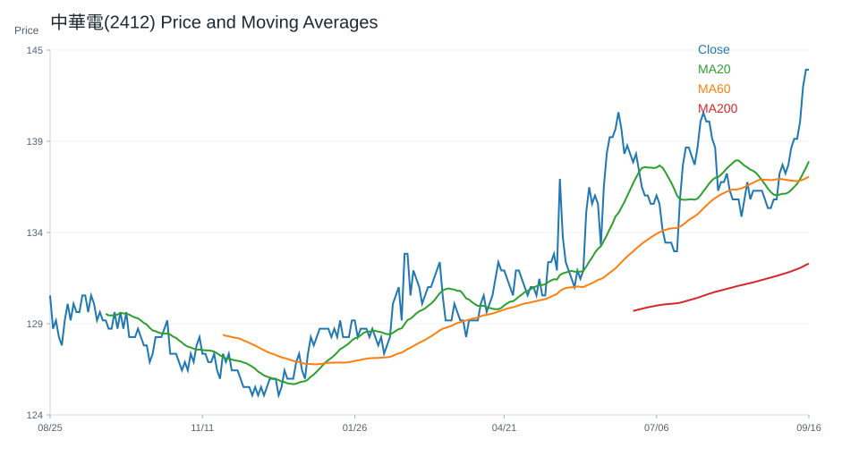
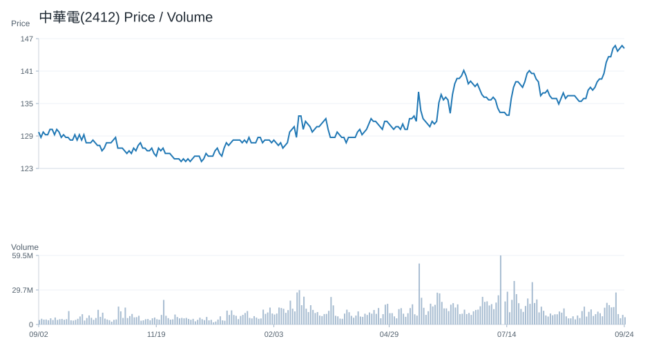
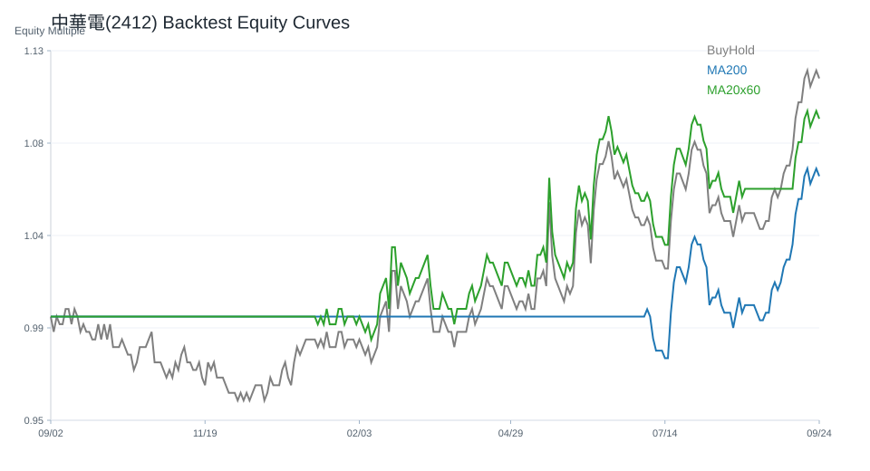

20 日
-0.35%60 日
5.22%研究訊號
中性市場資料
2026-07-03- 成交量17,551,367.00
- 20 日均線143.15
- 60 日均線139.09
- 200 日均線134.85
- 距 52 週高點-3.75%
- 距 52 週低點10.16%
技術指標
Python 計算- RSI1446.39
- MACD hist-0.63
- KD K/D5.08 / 13.86
- ADX26.89
- 布林上緣147.09
- 布林下緣139.21
量價與事件
規則式分析- 量價型態量能中性
- 量價分數-1
- 20 日量比1.22
- OBV 20 日變化-18.58%
- 事件偏向資料不足
- 事件分數資料不足
研究訊號
不是買賣建議中性，分數 -2。
- 跌破 20 日均線
- 站上 200 日均線
- RSI 位於中性偏強區
- MACD histogram 為負
- KD 偏弱
- ADX 顯示趨勢強度較高
- 量價型態：量能中性
- 量價未出現明確偏多或偏空結構
回測摘要
歷史資料研究| 策略 | CAGR | Sharpe | 最大回撤 | 勝率 | 交易次數 |
|---|---|---|---|---|---|
| 價格高於 200 日均線 | 6.71% | 0.72 | -7.35% | 52.41% | 4 |
| 20/60 日均線交叉 | 6.84% | 0.76 | -7.86% | 52.57% | 7 |
| 買進持有 | 7.45% | 0.68 | -16.41% | 52.29% | 1 |
圖表
價格 / 量價 / 回測中華電(2412)

中華電(2412)

中華電(2412)
